Một ngày mới lại bắt đầu nhưng nay ko gặp được em thật chán. Nay tôi về
nội,bữa nói ẻm là chiều thứ 7 qua nhà ẻm trộm chó mà đi ko được rùi,về
nội cũng vui được mấy ông anh dẫn đi ăn vặt ăn xog mấy ae rủ đi tắm sông
rồi đi câu cá nói chung là rất chill:]
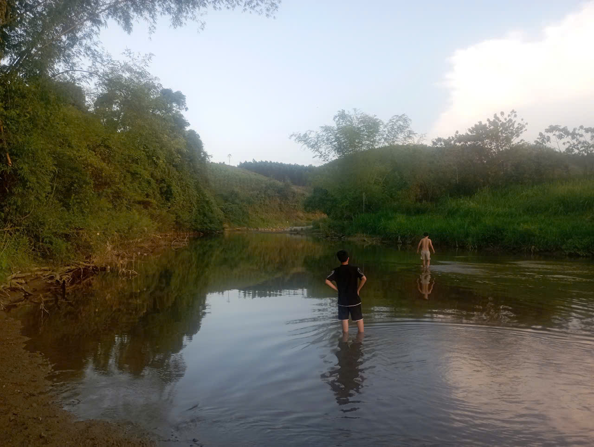
•18/5
Ye lại là 1 ngày mới bắt đầu nay tôi hơi bùn ẻm rùi đó mé tui chơi liên
tục từ sáng tới tối mà hổng thấy ẻm onl huhu :[.Chiều chán quá tôi với
thằng nhật đi ra sông bắt cua bắt thì được 2 con cua nhưng tôi đag đi
thì té thế là bay 1 miếng thịt.Nói chung là tui vẫn nhớ ẻm quá huhu thôi
chìu mai sang chỗ ẻm chơi v:]
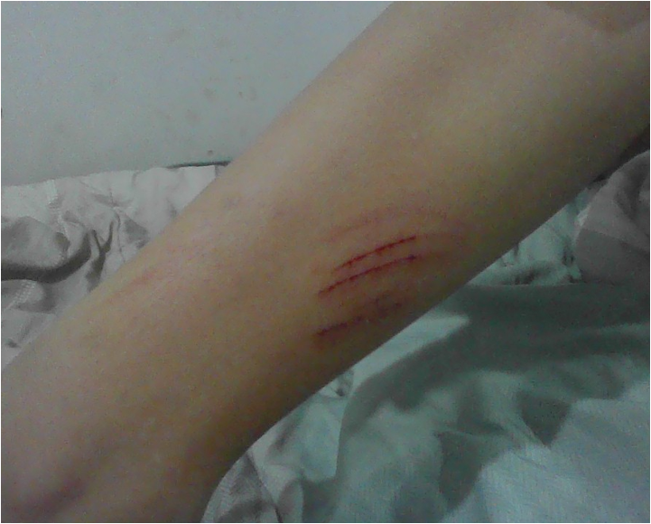
•19/5
Bắt đầu 1 ngày mới thật bùn chán vì ko gặp đc bu:[ .Có lẽ điều an ủi toi
nhất trong ngày hôm nay đó là đc chơi cùng ẻm một chút hồi chiều vì sáng
h toi chơi mà hổng thấy ẻm onl.Và cũng có lẽ mai là ngày cuối cùng tớ
được thả lỏng r bắt đầu từ ngày mai chính thức bắt đầu kế hoạch thực
hiện mục tiêu thôi.
•Giải nhất giao lưu hsg cấp huyện
•Tổng kết 10 cuối năm môn toán
•Giải nhì Tin Học Trẻ cấp TP
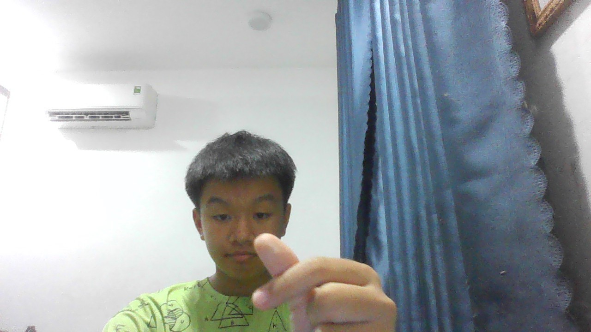
•20/5
haiz lại là 1 ngày ko đc gặp em chán quá đi:[ .Nay sáng tôi cùng thằng
nhật đi ăn sáng xog thì rủ xuống nhà tôi chơi game nhưng đang chơi thì
gặp ẻm chơi coi như cũng có chút an ủi,cở trưa 11h thì mẹ thg nhật gọi
về thế là tôi chơi 1 chút cái ngủ thẳng tới 3h chiều hên là chiều nó
cũng không nắng lắm nên là thg nhật rủ tôi đi cắt tóc nó cắt chớ tôi bữa
cắt r nhưng mà nhìn nó cắt xog buồn cười voãi:].Như đầu cắt moi v:]
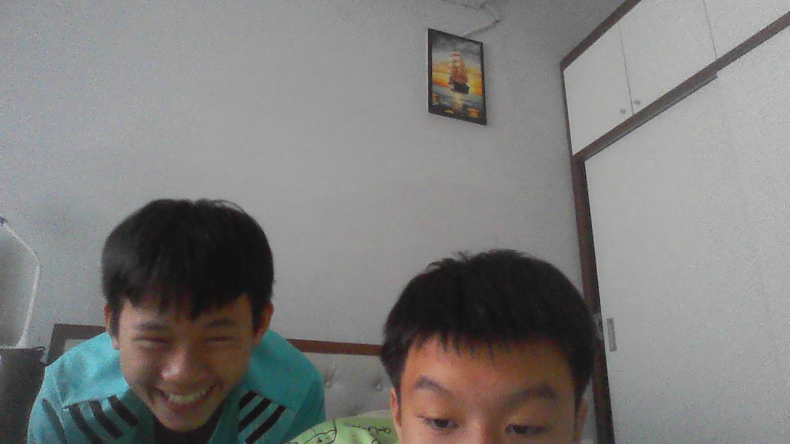
•21/5
Vậy là chỉ còn ngày mai nữa thôi là bế giảng rồi cũng là lúc mà tớ tận
hưởng nỗ lực của tớ trong 1 năm học qua,nói thật chứ trong 1 năm qua tớ
toàn chơi thôi học thì ít mà chơi thì nhiều nói chung thì vẫn chưa nỗ
lực lắm.Thôi v coi như năm nay là 1 trải nghiệm,hè năm nay sẽ là thời
điểm để tớ vượt mặt mấy bạn khác.Nói chớ nay không gặp được ẻm cũng hơn
chán thẹt,nhớ ẻm quá:[ .Sáng thằng Nhật xuống rủ tôi đi ăn r đi chơi nói
chung là những giây phút thư giản trước khi bắt đầu 1 mùa hè khắc
nghiệt.
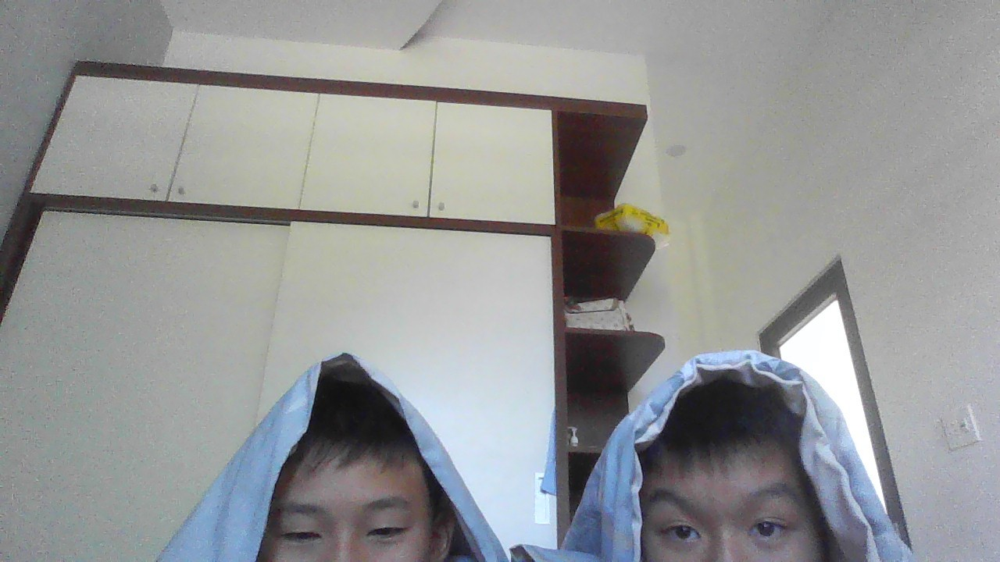
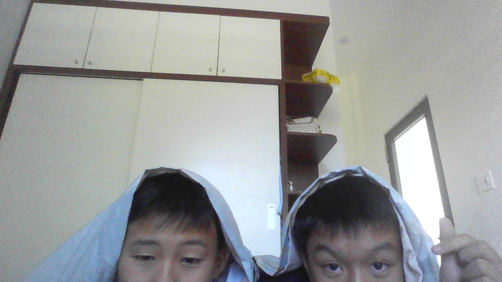
•22/5
Ye vậy mai là được gặp beiu ròi vui qué:] .Vui quá update web hơi trễ
tận 23h30 mới update do nhớ ẻm quá mà:[ .Nay tôi cùng thằng Nhật đi chơi
hơi nhiều sáng 2 thg ăn sáng xog r chạy quanh huyện r trưa về ăn tý r
chiều 4h lại phiên du trên chiếc xe đạp 2 thời của nó (thời chống
Pháp,chống Mỹ).Nó đạp mệt quá để tôi chở mà tôi chở mà nó cứ đằng sau
nói hoài nó kêu:"Minh ơi tao lạy mày cho tao chở đi đừng đừng...".Tui có
làm chi mô chỉ vừa chở nó rồi thả 2 tay thoi mà với lâu lâu lạng lách
tý:].Thế mà cũng ré,nói chung nay đi phiên du quanh huyện đi về 2 thằng
như mới tắm vậy:V
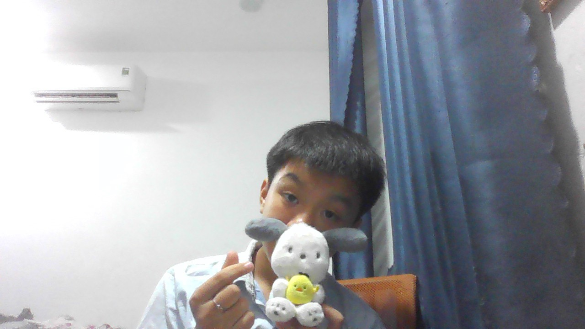
•23/5
Um nay là bế giảng cũng là lúc tớ được nhận được kết quả của mình trong
1 năm cố gắng cũng vui nhưng nay ẻm có vẻ hơi mệt nhỉ... .Haiz mà cũng
tình thế bắt buộc thôi thông cảm cho ẻm v,vậy là bắt đầu 3 tháng hè 1
khoảng thời gian không dài cũng không ngắn thôi v mong ẻm trong 3 tháng
hè ni không bỏ tui.Mà cũng biết ơn cô Vân đã đồng hành cùng tôi trong
năm lớp 7 này cô đã rất cố gắng giúp đỡ tôi trong học tập và động viên
tôi trước những kì thi mà có lẽ tôi đã làm cô thất vọng với kết quả
không được như ý,tôi cũng không hài lòng với kết quả này lắm năm nay tôi
chơi hơi nhiều có ngày tôi chơi 8h.Thôi vậy chuyện gì qua rồi thì cứ coi
như đó là 1 trải nghiệm v hè này là lúc tớ vượt lên.
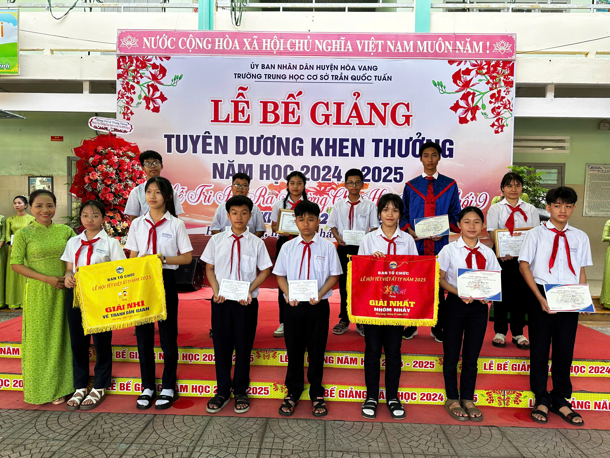
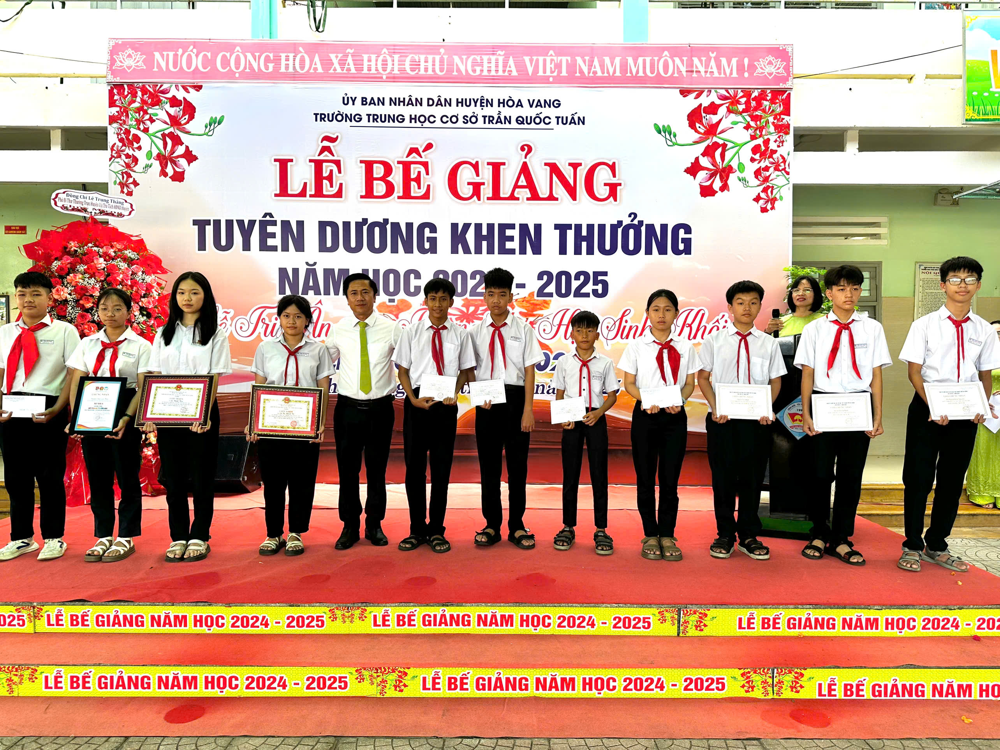
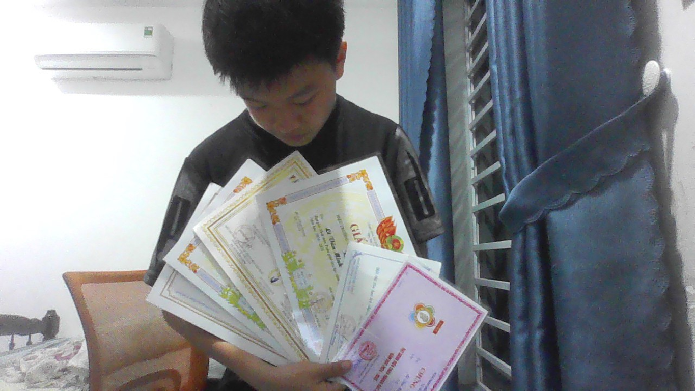
•24/5
Ờ hôm nay nhà tôi đi chơi đi quảng nam nhưng tôi không vui lắm do nhớ em
ấy tối đến tôi nghĩ đến nhiều chuyện buồn nhưng mà không có ai để tâm sự
cảm giác ấy thật không ổn chút nào.Sáng tôi ngủ đến 9h30 thế là không ăn
sáng luôn chờ 10h mẹ tôi mua cơm trưa về ăn,ăn xog thì tôi ngủ 1 giấc
nữa tới chiều chừng 2h30 cái ba tôi đi làm về chở cả nhà đi Quảng Nam
chơi,gia đình tôi đi theo đoàn gồm 5 gia đình trong đó có thằng hưng lớp
7/1 thì nói chung thì vẫn có bạn đấy.Xuống tới Quảng Nam thì cx 4h r thì
đi bơi tý hồ bơi chỗ đó cạnh biển thế nên tắm hồ bơi tý r chạy ra biển
bơi luôn.Bơi xog thì đi ăn vặt 1 chút r xog cái đi ăn tối mé cái quán
cạnh biển mà có 1 đầu bếp à ra món lâu vl chờ muốn xỉu luôn mà còn gặp
mấy con hổ đói trong đoàn nx ăn như chết đói v.Ăn xog thì cạnh biển nên
ra bắt còng thì con còng nó cũng giống con cua nhưng tôi méo hiểu sao
người dân gọi nó là còng chắc là tiếng địa phương,bắt được 2 con to chà
bá nhưng mà tôi cũng đi xem thôi không bắt,view biển về đêm đẹp thật
nhưng khiến người ta nghĩ những chuyện không nên,tối đó về xog cả đoàn
còn tụ về nhậu còn tôi thì ngồi chơi game.Tới 11h30 thì nhà tôi về biểu
đi ngủ thế là tôi nằm xuống ngủ,không biết là do không quen chỗ hay là
tôi nhớ ẻm nữa mà tôi nằm ko ngủ được.Thế là tôi nằm nghĩ lại tình yêu
của 2 chúng tôi có vài điều làm tôi suy nghĩ và cái video mà tôi xem lúc
tối khi đi ngắm biển (video tôi để ở dưới)
Chuyện mà tối đó tôi suy nghĩ:chuyện là hồi tôi xem video đó xog thì tôi
thấy nó khá giống ny tôi và dạo này tôi thấy ẻm chơi game mà tôi không vô
được tôi ko bt là ẻm có chặn tôi do tôi phiền ko hay là sao nx,và lúc tôi
mới yêu thì tôi nghe bé yến vs bé nhã cứ nói là cậu nào đeo kính j j á r
còn t ko nói đâu bla bla... nói chung là chọc bu về chàng trai nào á r bu
kiểu ngại đồ đó ờ thì lúc đố tôi kiểu bu yêu cũng được không yêu cũng
không sao lúc đó kiểu tôi tuyệt vọng r nên tôi không mog chờ là bu sẽ yêu
mình hay là kiểu thương mình đồ đó h lục lại kí ức thì nó hơi nhói nhỉ.Tớ
đã nhiều lần tự nhủ không sao đâu mọi chuyện không như mình nghĩ,mình nên
lạc quan lên ,lạc quan không được bao lâu thì chuyện buồn lại tới nên tôi
cũng hết hi vọng r bây h mà t quản ẻm thì ko đc tôi biết là tôi nên cho ẻm
không gian riêng còn ko quản ẻm thì tôi sợ ẻm theo ng khác,thôi v tôi cũng
không còn hi vọng gì nữa chừ xem ẻm như nào thôi để ẻm tự do v.^^
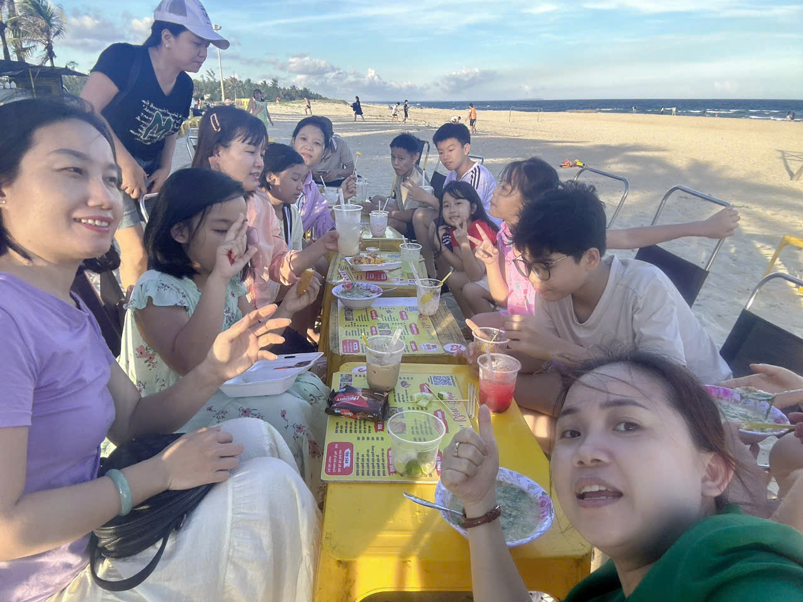
•25/5
Hm sáng tôi dậy sớm 4h dậy đi dạo biển xog tới 7h thì đi ăn,ăn xog thì
đi bơi hồ bơi tới 10h rồi vô bỏ đồ về lại đà nẵng ,trưa về mua 2 gói mì
tôm về ăn ăn xog thì lại 1 ngủ 1 giấc tới 2h30 rồi ba chở về nội gia
đình tôi thì về lại hết rồi còn mình tôi ở lại trên nội thôi tối nay ko
có ai tâm sự tớ đành tự suy ngẫm thôi tớ ghét tớ ,ghét những lần tớ tự
nhủ sẽ ổn và cần lạc quan nhưng tớ lại không làm được về đây nó cứ cảm
giác trống vắng sao ý.
•26/5
Sáng sớm thức dậy chưa kịp định thần thì cơn đau ập đến mé tối qua ngủ
méo đắp mền muỗi vô nó hút sắp cạn máu luôn mấy nay về nội chưa về lại
nhà sau 1 lúc ngồi lướt tiktok thì tôi xuống đánh răng rửa mặt dưới nhà
anh tôi,tôi ngủ chung với thằng anh hai tối qua tôi thức đến 2h sáng mới
vô ngủ với ổng nghe ổng kể lại là tôi lấn ổng vô tuốt trong giường:>.Xog
thì hơi đói tôi với anh 3 lên chợ mua tý đồ ăn,tụi tôi lên chợ hòa phú 1
phần là ông anh dẫn tôi đi xem chợ dưới quê 2 là đi mua đồ ăn nhà,ông ah
2 tôi đi thi r nên có tôi vs ah 3 ăn thôi.Ăn xog cũng 9h r tôi ngồi chs
game với lướt tiktok tới 11h30 thì ah 2 đi thi về còn ah 3 đi hc bồi
dưỡng tôi ăn trưa chút xog lên ngồi cày phim xem mà ngủ lúc nào ko
hay:].Dậy thì tới 3h30 dậy thì lại chs game típ tới 4h30 ah 3 hc về cái
lướt tiktok tới 6h đi ăn tối xog cái tối chán quá tôi rủ 2 ông ah xuống
chợ chơi mà 2 ổng kêu là đi j mà chợ,bin lâu ngày ko về ah m dẫn tới
lotte chơi mé gần sơn trà 3 thằng đi mà ko thg nào cầm đth đéo bt h
xuống đó 3 thg cầm 200k chơi 1 hồi cái tôi đag đi dạo thấy con gấu kia
đẹp quá mà cũng sắp tới 1/6 r mua tặng beiu nên mua luôn mé nó tận
100k:V đắt kinh.Xog 3 ae lên tầng 5 chơi thì đổi 20k lấy 8 xu tôi chơi
được cái móc khóa gấu,chơi chán r 3 thg về chợ túy loan ăn 3 tô hủ tiếu
xog chạy về nội về tới thì cx 11h30 r.Nói chung thì là lâu r mấy ae ms
vui thế này cũng 2 năm r từ lần cuối mà mấy ae đi chơi xa v haiz thời
gian trôi nhanh thật...
•27/5
Ôi mé nó 1 ngày địa ngục trần gian nay là ngày ăn chay mà tôi lại ở trên
nội sáng dậy thì ăn cơm với mướp luộc nói chung là nuốt trôi ăn tạm.Cái
trưa nội tôi mua chả chay về chiên r ăn với cơm cũng được và đặt biệt
buổi tối nhé tôi được ăn một món cực kì ngon là 2 gói mỳ tôm chay:].Huhu
chơi cả ngày mà hổng thấy beiu onl ko bt ẻm còn nhớ là ẻm có ny ko nx hừ
>:[.Thế là sáng đến tối tôi ngồi cày ff trời ơi vô cái đội 4 thg thì
luôn luôn có 1 cặp yêu nhau ngồi nó chụm đầu còn tôi với thằng đệ quen
qua mạng tôi thấy thế chụm đầu luôn cho đỡ nhục à mà chụm đầu trong game
có ý nghĩa là hun nhau é mog bé ny tui ko bít hehe:] ko lè ẻm cạo đầu
tôi lun chớ đùa .Chơi từ sáng đến tối chs gần 10h mệt vl.Ước j ẻm chs
game này nhỉ thé thì mình cũng đâu phải ngày nào vô cx ăn cơm chó của
mấy thg em nhở:[.À mà chừ seo để đổi tên pet ta đó lỡ để tên này r mà
thôi kệ mỗi lần nhìn pet là nhớ tới cái bé lùn lùn mà dễ thương kia cũng
có động lực chs game:] mog ẻm không xem nhật kí này,à mà chắc ẻm có bao
h xem đâu.
•28/5
Nay lại 1 ngày nghiện game của tôi cày từ sáng đến tối:].Sáng lên chợ
Hòa Phú định mua bánh bèo về ăn mà mé nó có 2 chỗ bán bánh bèo mà 2 chỗ
bán hết luôn r thế là đành phải ăn bánh ướt nói chung là ăn đc ko ngon
lắm,cái 9h thì ông ah 2 tôi đi thi thế là nhà còn mình tôi vs ông ah 3
trưa 2 ae ăn xog rồi lại lên nằm chừng 12h30 thì ah 3 lại đi hc lúc này
thì trog nhà còn mình tôi...,cảm giác nó trống vắng lắm lúc này tôi nhớ
tới ẻm mà sáng h tôi ko thấy ẻm onl tôi đành chơi game một mình từ 1h
đến 3h thì ah 2 thi về cái ổng vô làm luôn 1 giấc:V .Tôi lại cày game
tiếp tới 4h30 thì tôi vẫn không thấy ẻm onl chắc lúc đó đi chs r lm j mà
vô game:[.Tới 5h thì ah 3 hc về thế là kêu mấy ah chở tôi về nhà sẵn
tiện ở lại nhà tôi luôn,ăn xog thì tôi no voãi bìu nhưng chờ đến 8h thì
mấy ổng nổi hứng rủ đi chợ đêm chơi thế là 3 ae đèo nhau trên 2 chiếc xe
đạp,đang định đi thì con em tôi nó phát hiện thế nên phải đành cho nó đi
chơi luôn,ôi cái xe tôi nó trên ngoại nên là phải đi bộ lên lấy lên nhìn
xog xe tôi đéo mún nói j luôn ms để con chiến mã ở nhà có 3 ngày mà nó
thủng lốp lun:V .Cái tiện đường tôi lên rủ thằng Nhật đi chung cho vui
lên đó ăn uống 1 hồi cái đi về nhà cx 10h20 r.Nói chung là 1 ngày khá
yên bình haiz nhớ ẻm quá hic!:[
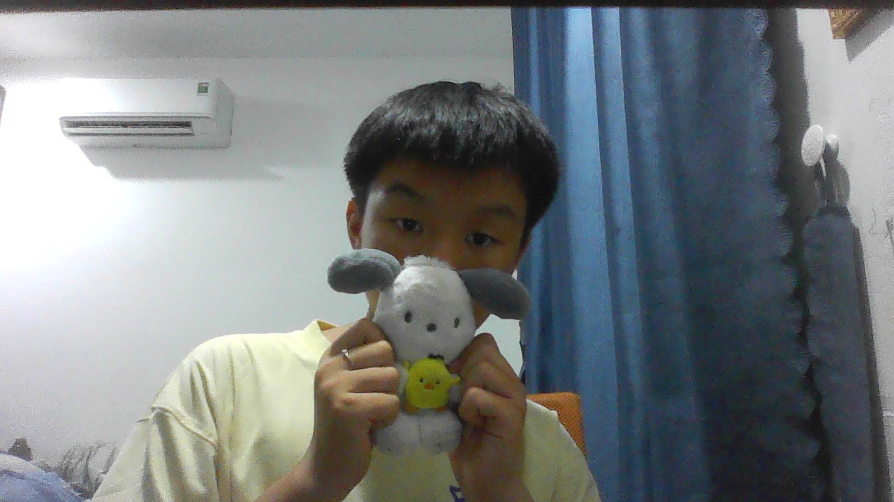
•29/5
Nay sáng rủ 2 ổng đi ăn thế là 3 ae đi bộ lên quán ăn qua nhà thg Nhật
thế là rủ nó đi ăn luôn,ăn xog định đi chơi tý mà lười quá nên tôi vs
thằng Nhật vô phòng tôi chơi game:].Chơi 1 hồi cái nó về ăn trưa thế là
tôi lại ngồi cày game từ lúc nó về tới 4h luôn quên ăn trưa thế là tôi
chế đại gói mỳ ăn xog thì tôi thấy trời ko còn nắng nên tôi lên nhà nó
mà nhà nó đóng cửa kín mít tưởng đi đâu r kêu chục lần ko nghe cái tôi
đạp cửa vô nhà nó luôn,trời ơi nó ngủ mà kêu ko nghe vl.Thế là 2 thg
trèo lên xe đi chơi đi quanh huyện cái tới khúc nhà bảo uyên định chui
cái kiệt số 7 với kiệt thứ 6 chạy ngang qua nhà bu r chạy lên nhà thg
phong mà thg bùi Nhật chạy hơi lố nên tôi kêu nó ôm cua vô kiệt số 8 đi
cũng được mé nó ôm cua kinh vl tui vừa vô nhìn lấy chục đứa đag chơi là
có điềm r,rồi lúc đó thg Nhật còn nói "Chết mẹ dính bẫy rồi":].Đó tôi
đang tịnh tâm sau khi nó ôm cua cái tôi nhìn thấy bảo uyên là hình như
bảo uyên đang tức chi á nhìn mặt hằm hằm còn liếc nữa chớ,hic tui có lm
chi đâu mà ẻm liếc kinh v mà kiểu như ko phải liếc đùa.Cái tôi đag vui
cái nhìn bu cái overthinking trỗi dậy...Lúc đó tôi quên cầm quà cái thg
nhật speed run về nhà lấy cho tôi còn tôi đi bộ lên nhà thg phong.Hm lúc
tui lấy quà lên thì ẻm đag còn chs đông quá không dám tặng lun á cái con
yến tốc biến đâu ra ko bt nx kêu bu ra cái tui tặng bu nhưng mà bu có vẻ
không vui lắm.Lúc đó tôi định ôm Bảo Uyên mà nhìn Uyên rứa không dám ôm
lun sợ giận haiz cái lúc đó mấy đứa kia tràn ra cái tôi vs thg nhật chạy
đi hồi qua nhà thg huy cái gặp 3 thg mặt lol kia trong đó có thg tiến
7/7 mẹ nó tôi nhìn là tôi đéo ưa r từ cái hồi nó nói ny tôi xấu này kia
r còn bảo tôi ăn tạp nx chớ mẹ nó nhìn cái méo muốn chs luôn thế là tôi
chở thg nhật về,đi đường cũ thấy bu đông đông là có điềm r tự nhiên đi
qua có cái chị kia ra chửi t kêu ai cho m yêu em t rồi j j nữa á quên
mất r lúc đó thì t thấy bảo uyên mà ờm không dám nhìn luôn...Lúc đó tôi
hết tâm trạng r tôi chạy thẳng về nhà luôn.Nói chung nay tặng được quà
1/6 cho emiu là đc r mà nhìn tâm trạng ẻm có vẻ không vui làm tôi giờ
cũng ko vui lun haiz...
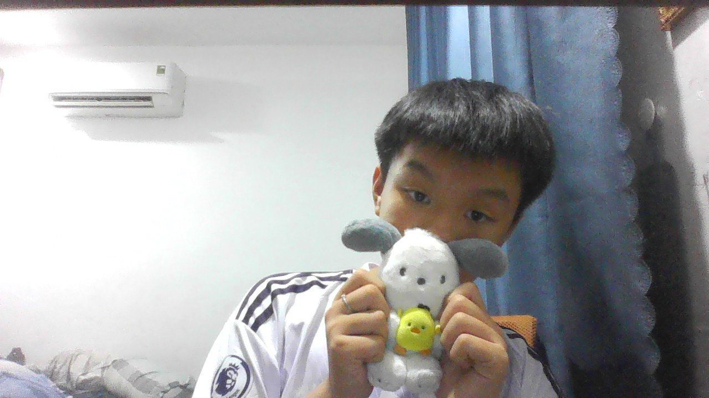
•30/5
Hehe tôi vẫn còn vui sau khi hôm qua ebe tôi nói những câu đó,nay tôi
cầm cái đoạn tin nhắn ra đọc đi đọc lại ít cũng 5 lần r:].Thé còn được
chúc ngủ ngon nx chứ hehe,đang mơ tới cảnh sắp được ôm ebe tôi r thì thg
nhật nó đạp của phòng tôi nó bay vô conme nó thg này nó như ở nhà v nó
bay thẳng lên giường tôi r còn kéo chăn tôi đang đắp nx chớ,tôi lờ đờ mở
mắt ra nhìn đồng hồ à mà đồng hồ của phòng tôi nằm đối diện giường tôi
lun nên mới ngủ dậy là tôi nhìn đc ngay cái đồng hồ mé nó mới 6h30 trong
khi tôi hẹn nó 7h30 xuống nhà tôi thế là 2 thg đắp chung cái chăn ngủ
tiếp mé tối tôi chúc ebe tôi ngủ xog thì tôi vui qué không ngủ được tới
1h sáng mới buồn ngủ.Tôi nằm tôi để máy tính trên giường lun mà nó vô nó
đắp mềm tôi mở máy tính tôi mé ko ngờ nó cx bt mk mt tôi tính ra cx
nhiều ng bt sn ebe tôi á chứ nhể:].Nó mở máy tính lên thì vào luôn
roblox cái tôi chợp mắt đc thêm 20ph nx cái tôi ra đánh răng súc miệng
đi ăn sáng vs nó.Sáng 2 thg rảnh đi qua rủ 2 thg huy vs thg phong đi ăn
sáng 4 thg chạy vô chợ mua ổ bánh mì ăn r về lúc đó thì tôi định qua nhà
thg huy chs chút mà lười quá đi về luôn,đi về thì tôi thấy 2 đứa mô á
đéo quen lắm nhưng tôi thấy bé phía sau mặc áo màu vàng giống áo ebe tôi
hay mặc đi hc mà nói mẹ là 1 đi chứ giống j nx,trời tối qua thì ngồi
nhắn thân thiết lắm nay lên gặp mặt né còn hơn né tà nữa,ẻm tưởng tôi ko
nhìn thấy hay sao á mà cứ núp hoài à tức á >:[.Rồi t nghe bé đằng trước
kêu thg đó á hả rồi khúc sau ko nghe đc nx ko bt là nói ch j :|.Trưa về
chs chờ ẻm onl mệt vãi buồn ngủ kinh mà vẫn thức chờ ẻm onl chờ từ 12h
đến 3h tới 3h mấy mới thấy ẻm onl lúc đó tôi buồn ngủ lắm rồi,cái ẻm gõ
'hi' cái tôi cũng gõ 'hi:]' định nhắn cho ẻm hỏi sao hồi sáng né kinh
rứa mà buồn ngủ thấy ẻm gõ hi r tưởng có ch chi ns vs mik ai ngờ chờ 1
hồi ẻm thoát bà lun hic:[.Cái thg Nhật xuống rủ tôi đi chs chạy qua khúc
nhà ẻm thì thấy 1 đám tụ tập phía trước tôi thấy r định đi qua mà thôi
ngại chắc có ẻm ở đó nên ôm cua chạy đường vòng qua.Cái tý đi về thấy
ebe tôi đang chơi bên kiệt số 8 thì tôi đi bên kiệt số 7 ye đi ngang mà
ẻm ko bt định quẹo phải chạy ngang nhà ebe tôi r chạy về thg nhật quẹo
trái thế là chạy qua chổ ebe tôi chs mà tôi nhanh tay nhảy xuống xe thế
là thoát 1 kiếp nạn:].Thế là về cày game từ 5h đến 1h sáng vẫn ko thấy
ẻm onl hic:[.Thôi nói chung là giờ tôi nhớ ebe của toiiiii huhu:[
•31/5
Haiz hôm nay thg Nhật về ngoại thế là ko đi qua chỗ ebe tui đc r,nói thì
hôm nay chán thật sáng đậy thg Nhật đã nói nay t về ngoại 1 bữa có j m
đi ăn 1 mình nhé mai t rủ đi ăn sau.Tôi nằm lướt tiktok tý định đi ăn
thì ba tôi mua đồ ăn về tôi cứ tưởng ba đi lm r mà ko ba tôi nay về lo
đám dưới nội,thế là tôi cũng đi về nội luôn.Cay nhất là khúc này tôi cầm
cái balo bỏ con chuột,lót chuột,cục sạc và con gấu ebe toi tặng nhưng mà
ko đem máy tính thèn chi thấy cặp nhẹ nhẹ hóa ra là đéo đem máy tính.Về
đó tôi mượn đth ba chs cái trưa cúng xog ăn xog tới 2h chiều thì đi về
lại nhà vừa về đến nhà thì lại mưa mưa to luôn á chớ nhìn mưa thì toi
thấy nhớ ebe của toi hic:[ .Rồi sấm sét đùng đùng nx,chơi tý thì mẹ tôi
về thế là ăn tối xog tôi vô chs game thấy ebe tôi chs nên tôi cx chs
luôn đag chs vs ebe thì thg huy nó vô chửi tôi chửi 1 tràng là tôi đớ
người lun nó xóa kb roblox xog cái nó qua zalo chửi tôi r xog nó chặn
luôn lúc nó chặn thì tôi vẫn chưa hiểu j cả.Tôi cx kệ nó luôn chờ nào
giải thích sau cái tôi chs vs ebe tôi chút cái ebe tôi off tôi ngồi xem
thử toán lớp 8 như nào mà ai ngờ quyển sách toán tập 1 tôi ko cần hc tất
cả kiến thức tôi đều đã học ở lớp 7 rồi tới nữa quyển sách tập 2 mới khó
nên tôi quyết định để đó mai tính chứ hồi tôi cập nhật xog ngày 31/5 thì
cx là 1h30 ngày 1/6 r.
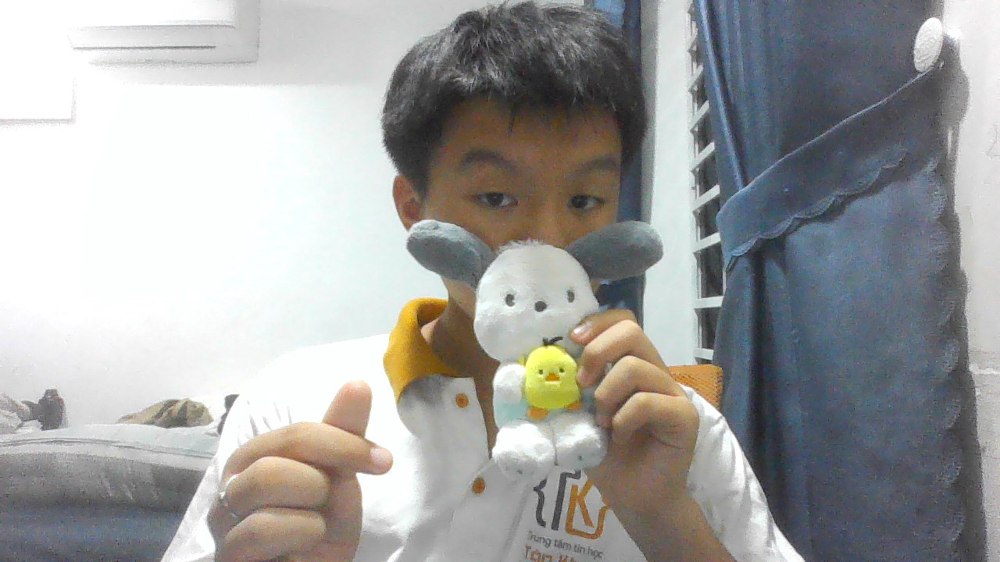
•1/6->4/6
Ờm thì mấy bữa ni nghiện game nên ko hay update web nói thì nghiện game
thì tôi cx có lí do á chớ haiz...Bữa mẹ tôi hỏi 'mẹ nghe mẹ bảo uyên nói
con lên đó tặng quà chi hả' ờ lúc đó tôi không bt giải thích thế nào nữa
cái xog mẹ tôi nói quá trời r còn định chuyển tôi sang 7/1 haiz may tôi
cx cố giải thích này nọ qua kiếp nạn này,xog mẹ tôi nói chỉ cần con hc
bame j cx hỗ trợ thế là tôi xin mẹ đi hc văn mà mẹ tôi ms đăng kí hc
toán mà cx trùng lịch nên mẹ kêu vô năm hc sau thế là hè này ko đc gặp
bảo uyên r...Sau chuyện này thì tôi cx ko để tâm lắm nhưng mà tôi lo cho
bé iu tôi ko bt là lm kiểu j mà để mẹ ẻm bt nữa,rồi liệu ẻm có bị mẹ la
không,rồi ẻm có buồn không rồi mấy ngày sau tôi cứ lo như vậy r mấy bữa
ni tôi nhớ ẻm quá mà vô game ko thấy ẻm thế tôi cx nản chán luôn thế là
tôi tìm đến game.Nói sao nhỉ tôi chỉ thấy qua game mới có niềm vui ý có
ae leo rank nè có bn bè nch nè còn vừa ra khỏi game là phải hc thêm,rồi
còn hôm bữa nữa tôi mới đi chơi với thg nhật về mới vừa về đã nghe mẹ
nói này nọ nói chung là ko yên đc gia đình lúc nào cx cãi qua cãi lại ồn
ào.Ăn cơm cũng không ngon,lúc tôi ở nhà xem phim thì kêu sao ở nhà hoài
không ra ngoài chơi,mà cái lúc tôi đi chơi thì lại nói đi chơi miết.Mệt
mỏi thì tôi chỉ có thể tìm đến game thôi bữa có ngày tôi còn chơi hơn
12h/1 ngày haiz trong game bạn tôi toàn mấy thg 2k7,2k8 thôi mà nói
chuyện cũng hợp nhau nên chơi cũng khá thân.Tóm lại là mấy ngày này tôi
đều đâm đầu vào game chơi hết để không đối mặt với thực tại và cũng đỡ
nhớ em...Mấy bữa ni ngủ cũng chỉ biết ôm gấu cho đỡ nhớ hic:[
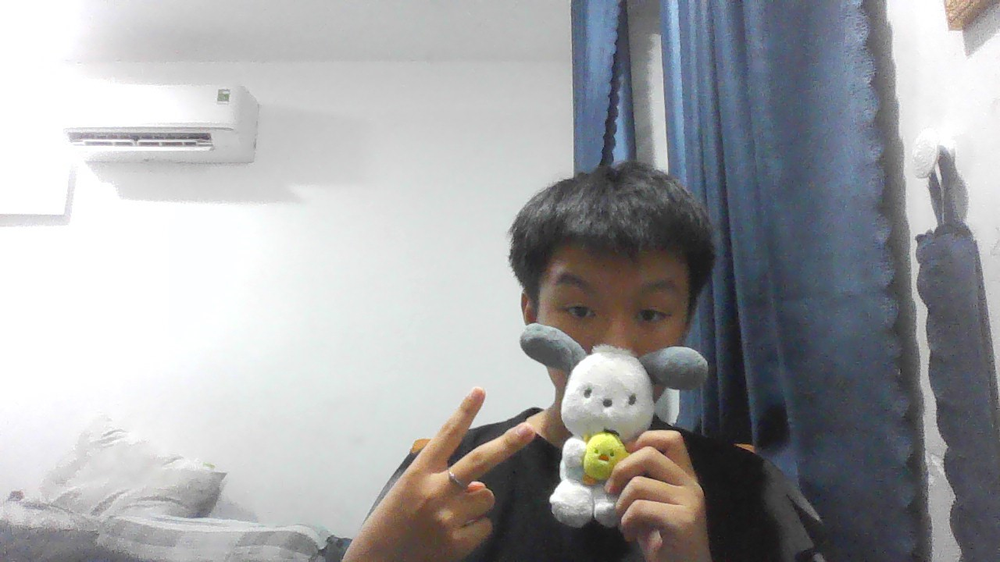
•5/6
Um 1 ngày cực kì tồi tệ.Sáng đi học tiếng anh tôi nghe thg hiếu nói bé
bu ghét tôi do tại hack acc thg huy nhưng mà tôi có hack đâu.Thế là
chiều đó tôi đi sang hỏi bé bu có cầm thêm gói bánh tặng bu mà nhìn mặt
bu kiểu vô cảm vl,tặng xog mới hỏi đc 1 câu thì tụi kia tràn ra như kiến
ạ chịu.Thế là tôi đành đi về vs lời nói là bu ko ghét,nhưng tôi ko bt em
nói tht ko nx,xog tối tôi thấy ẻm onl tôi định vô chs vs nhắn tin cho ẻm
1 chút thì tôi thấy ẻm xóa kb tôi,tôi định gửi kb lại nhưng mà ẻm chặn
tôi r.Gia đình thì suốt ngày cãi nhau,tình yêu tình bất ổn,game thì bị
ban,hc thì ngu tôi ko bt sống còn ý nghĩa j nx haiz...Tối đó tôi đã khóc
rất nhiều,ng ta nói con trai ko đc khóc nhưng chỉ là họ chưa tới lúc
buồn thôi,lần đầu tiên tôi khóc nhiều đến v khóc mà kiểu cạn nước mắt r
mới thôi.Tôi không hiểu tôi đã làm gì sai mà để em làm tới bước này
nhưng tôi mong em ơi có ch j thì hãy nói với anh chứ đừng tự giải quyết
cảm giác đấy ah trải qua r đau lắm và lm ơn đừng bỏ rơi anh...^^
•6/6
Sáng thg Nhật lỏ xuống nhà rủ tôi đi ăn sáng mà ăn trễ quá bán hết r thế
là 2 thg đi mua bánh mỳ gặm tạm.Xog thì tôi về nghiện game tới 3h xog
ngủ tới 5h xog dậy đi hc tới 8h mới về đến nhà thì ah họ tôi về chs mấy
ngày thế là 2 thg nghiện block blast tới 1h sáng.Cái ba tôi vô kêu ngủ
tôi mới ngủ.
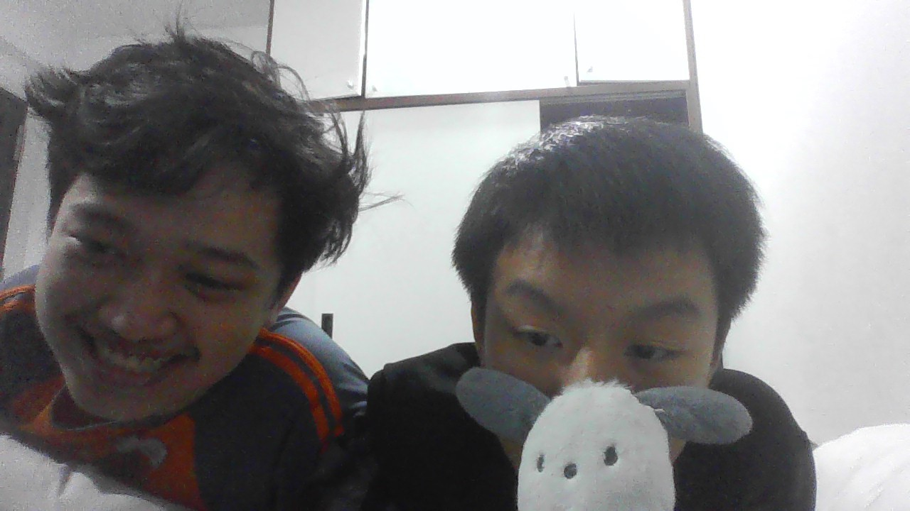
•7/6
Sáng 6h30 dậy xog tôi rủ ah họ đi ăn sáng chung vs tôi và thg nhật
lỏ.Tôi vs thg nhật 1 chiếc xe còn oog ah tôi 1 chiếc riêng.Mé lên 3 thg
ăn như chetdoi ăn tận 48k bánh bèo còn mua thêm 2 ly sting tổng kết 1
buổi sáng 60k.Trưa về tôi cùng thg ah nghiện minecraft tới 2h chợt nhận
ra pokemon ko lái được thế là nghỉ game.Tôi ngủ tới 5h chiều r đi ra
ngoài chs cùng ông ah và thg nhật chs 1 hồi cái về lại nhà ăn tối 1 tý
cái tôi cùng thg anh vô phòng ngồi tìm kiếm cocaideo j chs ko nhưng kq
là meo có j chs.Tôi thấy ny tôi chs roblox tôi định vô chs chung nhưng
quên rằng cậu ấy đã chặn tôi ^^.Haiz tuần trc còn nt mà tuần này đã chặn
rùi... haiz chánnnnnnnnnnnnnnnnn
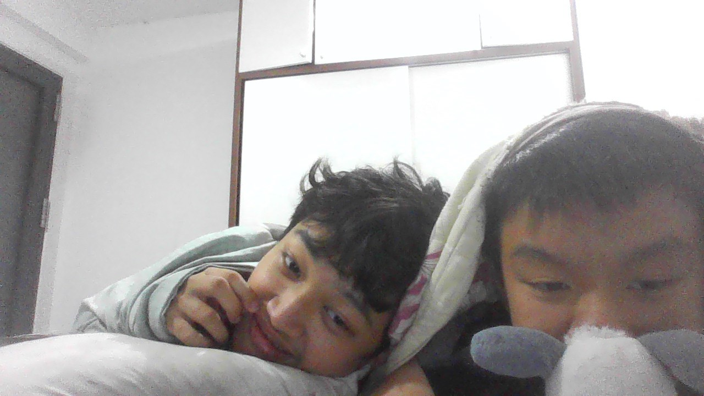
•8/6
Sáng 7h dậy tôi cùng thg nhật vs ah họ đi ăn sáng ăn xog về chơi được 1
lúc thì anh họ tôi về thành phố thế là tôi lại 1 mình cảm giác trống
trãi lạ thường.Haiz tôi lại nhớ em ấy nữa rồi,không biết cậu ấy giờ làm
gì nữa.Lúc anh họ tôi về thì tôi lại nằm xem tiktok liên tục tới chừng
9h mấy mẹ tôi cứ vào nói này nọ tôi mệt quá cũng không phản bác mặt kệ
mẹ tôi nói tôi.Tôi nằm mà ngủ lúc nào không hay thế là lúc tôi dậy đã là
2h chiều chắc tôi ngủ từ 10h sáng cũng được 4h r,tôi dậy xog ra bớt cơm
ăn trưa thì ba nói tý về nội không.Thì ở đây cũng chán nên tôi đi về nội
chung với ba về đó nói ch vs ah 3 chút hỏi ổng đã hc đc j r ổng cx sắp
thi đại học rồi tôi không muốn ng anh này phải đi nghĩa vụ 2 năm vì nếu
ổng đi nghĩa vụ về thì tôi cũng đã lớp 10 r.Tôi chơi nói chuyện với ổng
một lúc thì tôi về,về nhà xog tôi chui vô phòng lướt tiktok nhìn ra
ngoài cửa sổ thì trời âm u với gió thổi bay bay nữa cảm giác thật là
trống trải.Cái tôi vô thử game xem ẻm có còn chặn tôi không thì kết quả
không ngoài dự đoán em vẫn chặn tôi tôi qua thử acc phụ thì em có kb tôi
r lúc đó tôi có chút vui nhưng mà ko bt liệu em có kb đại hay là ẻm bt
là tôi nx.Tối thì tôi ngồi lập bảng thời gian biểu mùa hè nói chung cũng
đc,haiz ko bt nếu ẻm biết acc cloud đó là tôi thì ẻm có chặn tôi típ hay
không nữa...Haiz mỗi lúc như này thì tôi cứ nhắm mắt lại nghĩ đến những
điều tích cực rồi thở 1 hơi dài thế là xog...Tuần sau game update vô
chọc ẻm tý v:]
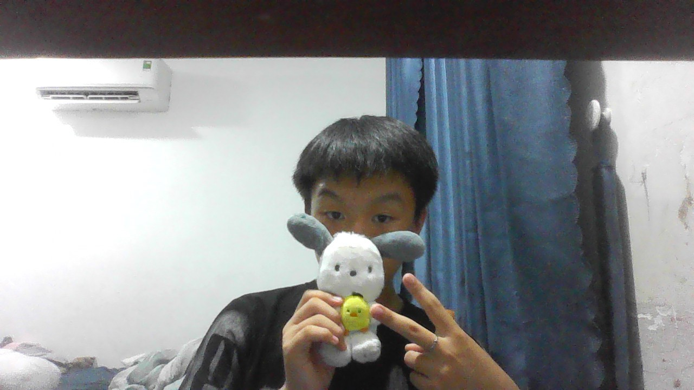
•9/6
Trăng hôm nay đẹp thật là anh lại nhớ em nx r...Haiz anh vẫn đang cố
từng ngày cải thiện bản thân hơn đây,em đừng bỏ ah nha...Hôm nay vui
thật chiều tôi đi học thêm toán tôi đã tự giở tay và trả lời được 1 câu
trong đề thầy giao đối với ai khác thì tôi không biết chứ đối với tôi
thì đó là 1 bước tiến bộ r^^.Tin thì tôi đã hiểu ra được nhiều lệnh hơn
cách xử lý code cả tư duy làm bài cũng được cải thiện đáng kể.Tôi vẫn sẽ
cố gắng từng ngày cố vượt qua bản thân của ngày hôm qua,tối tôi đi học
về thì thấy ẻm onl chơi với bạn á nhưng mà tôi không dám vô sợ làm phiền
ẻm chơi với bạn.Thế là tôi để đó tôi ngồi làm code cái tới 12h mới thấy
ẻm mời tôi vô chơi game nhưng tôi cx ko bt là ẻm bt tôi hay là vô tình
mời nx mà thoi ẻm đý kb của toi cx vui r^^.Trãng Nghia sáng mới nói cho
tôi cái chuyện bữa tôi nhờ nó,mà câu trl nó cứ sao sao ý >:[.Thôi nay là
ngày cuối cùng tôi ngủ trễ v h cx 1h15 r ngủ sớm tý v,mà đêm nay trăng
tròn thật làm tôi nhớ em quá...
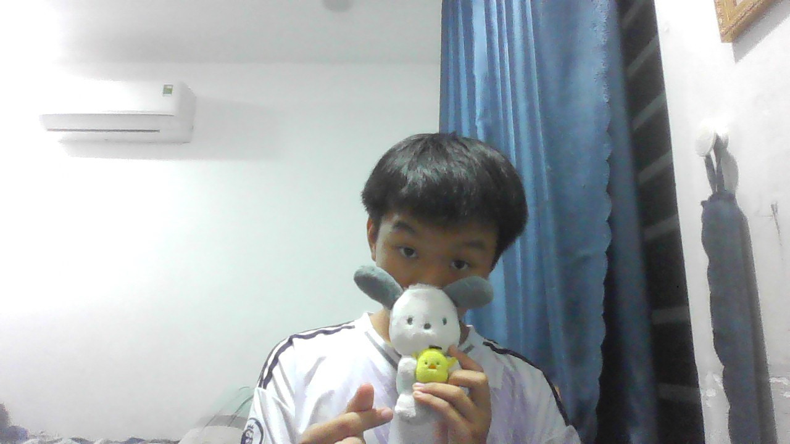
•10/6
Um trong những ngày ko có cậu tớ đã học được cách lạc quan r nèk,cậu
thấy tớ giỏi hok^^.Sáng thg nhật xuống rủ tôi đi ăn sáng mà nay tôi ăn
chay nên là nó đành về nhà cái tôi cũng ngủ tiếp tôi có lịch học anh vào
8h30 cái tôi ngủ dậy thì thấy 8h25 r thế là bằng 1 tốc độ thần kì tôi đã
cầm theo 1 cái bánh gạo và chạy ngay tới lớp học thêm.Học xog như bị bỏ
đó 200 năm v thế là tôi về ăn trưa bằng đồ ăn sáng cái trưa đó mưa lâu r
mới thấy mưa tôi lại nhớ em nữa r ;-;.Xog cái tôi ngồi xem tiktok tới 2h
xong hc tin tới 3h30 cái trời cũng tạnh tạnh cái tôi lên rủ thg nhật đi
chơi mà đi quanh quanh xóm thôi ko đi xa nói chung cx chán r 2 thg về
lại nhà.Ye tôi lại thấy trình độ code và khả năng xử lí code của mình
lại cải thiện r,coi như cũng có cải thiện r.Nay tôi cũng ngủ sớm r tận
11h30 cũng hơn trễ để từ từ r cải thiện v:].Nói chung ngày hôm nay chỉ
có v thôi trừ cái chuyện thg long nó làm mất chuỗi 31 của tôi làm tôi
cay vl ra thì cũng chẳng còn chuyện j à mà tôi cũng hơi nhớ ẻm nữa mấy
bữa ni tôi mỗi lần nhớ ẻm tôi đều làm 1 đề tin thế là hôm qua giờ tôi đã
giải hơn 50 bài r ;-;.
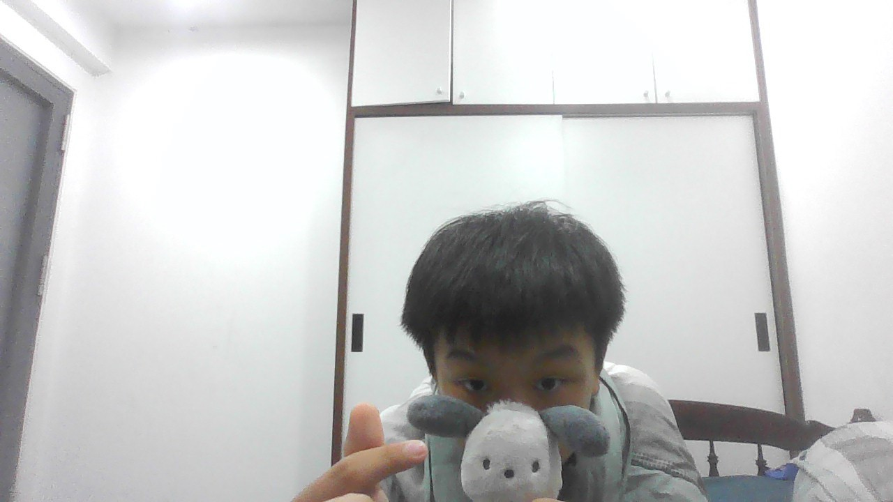
•11/6
Ye nay ẻm gỡ ban tui gòi:].Nay trời mưa cả nguyên ngày lm tôi méo đi đc
đâu cả:V.Nay đã có cải thiện r.Tôi sẽ cố cải thiện từng ngày.
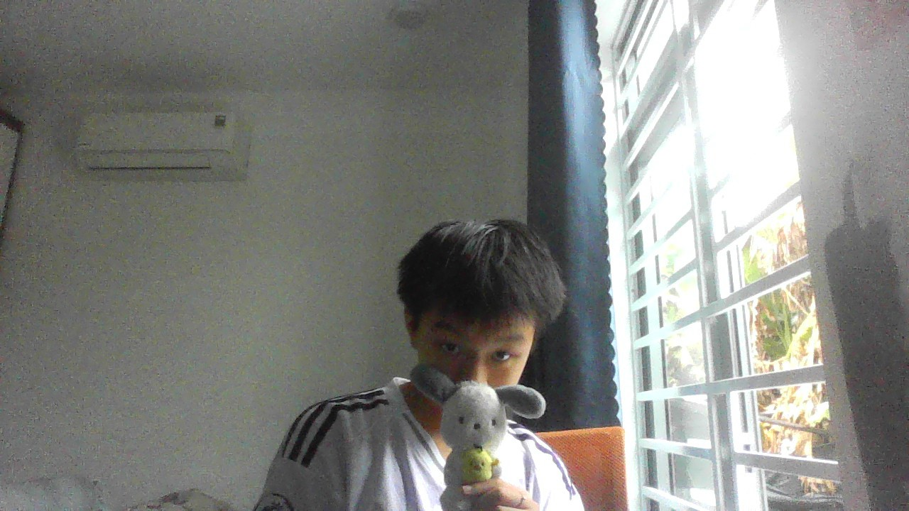
•12/6
Ye sắp lụt r bơi thôi:].Chỗ tôi mưa sắp lụt r mưa thêm tý nữa mặc áo
phao ra ngoài bơi luôn chứ chờ nó vô nhà tôi chắc tới thập kỷ sau còn
chưa có quá.Sáng 10h mới dậy ngủ sướng lun:].R trưa chạy lên bà bảy mua
2 gói mỳ về ăn,ăn xog tôi liền vô chơi game,mé từ hồi ẻm gỡ ban tôi,tôi
lại bắt đầu nghiện game r:V.Thoi v h toi sẽ ít chơi game lại chờ tuần
sau có lịch thì tôi sẽ lên thời gian biểu và thực hiện nó.Tối nay nhắn
ẻm mà ẻm ko rep bất lực kinh-___-.Thoi v hôm nay có cải thiện hơn hôm
qua r nhưng không nhiều chắc mai tôi sẽ trở lại những ngày tháng bị ẻm
chặn đó thề làm nhiều bài vui thẹt cảm giác tự làm á tuy nếu có ai khen
tôi thì sẽ tốt hơn nhưng thế là đủ r.Tuần này đa phần là tôi học tin
toán thì ít học tuần sau tôi sẽ cân bằng học giữa toán và tin:].Haiz...
nhưng mà nhớ ẻm quá:[.
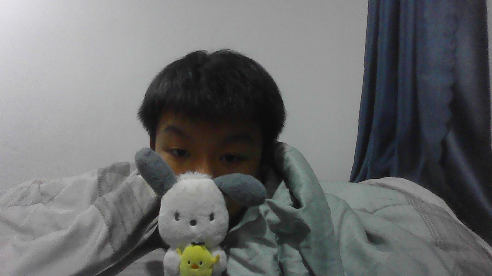
•13/6
Hết mưa r chán hẳn.Onl game nguyên ngày mà hok thấy ẻm onl tối xem lại
thấy ẻm mời mik mà mik ko bt:[.Mé tối muỗi như bầy đàn nó bu vô chích
như con luôn tôi định đắp kín mềm mà nóng,thế là cả đêm bị muỗi chích k
ngủ đc:[.
•14/6
Một ngày chán onl nguyên ngày mà ko thấy ẻm onl chiều chạy sang cx chẳng
thấy đâu hỏi con chip thì bt ẻm đi chs ròi.Haiz tối ni update game tưởng
ẻm sẽ onl mà ẻm cx hok onl lun:[,tôi nhớ ẻm qué...Tối nay tôi cầm vợt
muỗi thủ sẵn ko lm thì ko bt chứ lm thì hết hồn phòng tôi toàn mùi khét
cx đúng đập nhiều muỗi quá cứ 1 mét vuông là chục con muỗi>:[,ức chế
kinh á.Haiz nhớ ebe quá...
•15/6
Ye sáng tỉnh dậy thấy nhà vắng tanh chắc đi chùa hết r,lúc tôi dậy thì
cũng đã 10h rồi khá trễ nên tôi chơi 1 chút tới 11h30 chế 2 gói mỳ ăn
nói chung cũng khá đơn giản ăn xog r vô nằm chơi tới chiều,cái tối vô
thấy ẻm onl mừng qué vô chào ẻm 1 cái,xog ẻm biến mất lun ;-;.
•16/6
Sáng nhật xuống rủ tôi đi ăn sáng,mà tôi kêu tí t đi hc thêm văn r thế
là nó định về mà tôi kêu thôi t ăn vs m chút cx đc thế là 2 thg lên quán
ăn,ăn xog nó tự đi về còn tôi lên chỗ học thêm học thêm văn buổi đầu cx
đc.Học xog ra thấy ẻm gặm bánh mì ;-;,trùi ui ăn trễ quá cũng không tốt
cho sức khỏe cái tôi nhắc ẻm với hỏi thăm ẻm mấy câu cái vìa.Trưa về ăn
trưa xog ngủ 1 giấc chiều thg nhật xuống rủ tôi đi học,lên đó mất 5ph,2
thg chạy như chó luôn.Học xog la cà 1 chút r về nhà soạn đồ đi học toán
típ,8h30 mới về đến nhà.Vô game thì thấy ẻm onl,
•17/6
Không biết lựa chọn như thế nào nữa,tớ mệt r...Chiều ni tôi với thg nhật
chạy qua chỗ bé cún chs,ờ thì tôi cũng hơi đau chân nên ko chơi đc hồi
trước khi chs là tôi có xin cún cho ôm 1 cái mà cún ko nói j cả ờ mà ở
đó cx nhiều đứa nên tôi cũng thông cảm nhưng mà thấy hơi hụt hẫn.Chơi
được 1 lúc cái tôi hơi chán vì cún có vẻ kqutam tôi lắm ^^,xog cái tôi
cx thua với hơi mệt nên định về lun mà cún chạy ra nói vô chơi mà hình
như ẻm suy nghĩ chi á rồi kêu tôi đi về đi ờm lúc đó tôi cũng mệt rồi
nên tôi về luôn.Về học tin tới 9h30 xog tôi vô nằm tôi suy nghĩ về chiều
ni với lại mấy tin nhắn tối qua tôi gửi cún mà cún ko rep.Nếu tôi không
chủ động thì liệu có cuộc trò chuyện ở đây không nhỉ ^^.Tôi bt là con
trai nên chủ động,nhưng chủ động nhiều quá mà không nhận lại được gì thì
cũng không tốt đâu.Tớ cũng muốn được quan tâm mà cậu,tớ cũng muốn được
cậu chủ động dù 1 chút cũng được ^^.Nằm suy nghĩ mà nước mắt rơi lúc nào
không hay...,lâu r tôi mới như v.Haiz tôi không biết nên duy trì mqh 1
chiều này không nữa...,tôi biết là cần thời gian nên thôi v đành cất nó
vào lòng v,tôi nghĩ tôi nên thu mình lại thôi^^,với lại mấy ngày ni ẻm mệt tôi nghĩ không nên làm ẻm nghĩ nhiều hơn.
.jpg) 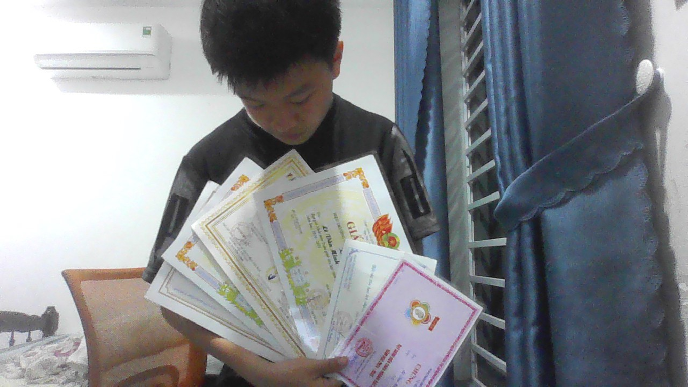
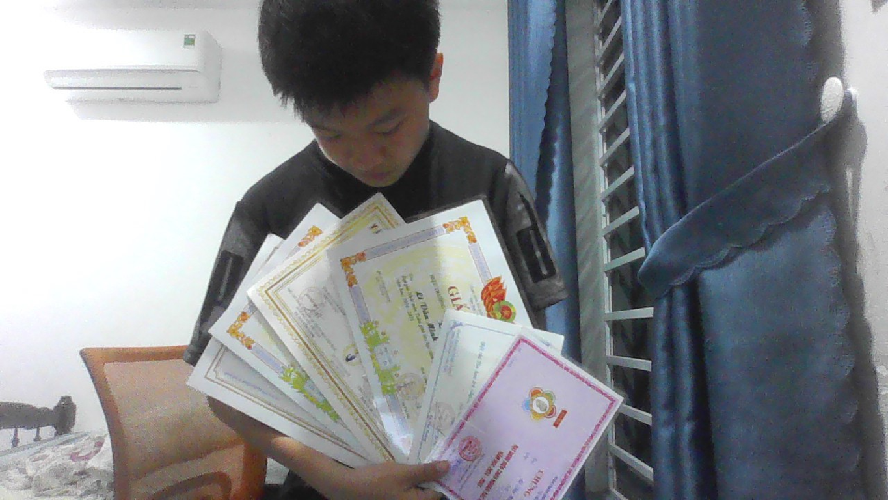
.jpg)
.jpg)
.jpg)
.jpg)
.jpg)
.jpg)
.jpg)
.jpg)
.jpg)
.jpg)
.jpg)
.jpg)
.jpg)
.png)
.png)